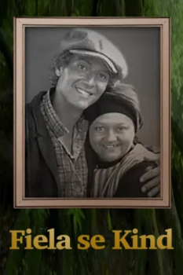

Also known as:Fiela se Kind (original title)
Country:AF, 105 minutes
Spoken languages:
Genres:Drama, Family
Director(s):Katinka Heyns
Writer(s):Dalene Matthee
Video Codec:Unknown
Number: 1982


Certification:
Storyline:
The acclaimed drama based on Dalene Matthee´s award-winning novel. "Fiela se Kind" (Fiela's Child) is the story of a white foundling boy that is raised by a brown family. But the childs life changes irrevocably when white census officials discover him living across the established borders of society, and he is removed from his foster parents. "This is the moving story about a close family being torn apart by the social convictions of the day. It is the story of a mother´s enduring love and hope to see her taken son again. Fiela is a down to earth woman farmer who does not let anyone step on her. She raised a white castaway child, Benjamin, and teaches him the simple things in life."
Cast:

Medium: Original DVD,
Loaned: No
Aspect ratio: Unknown